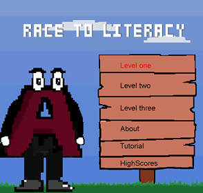
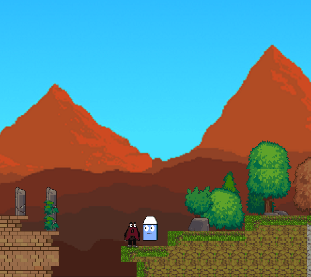
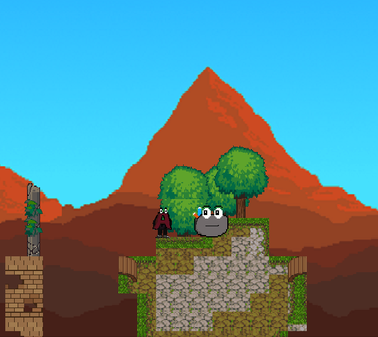

By:Mohammad-Ali Bandzar | June 13 2019
A brief description of my final project
For my final project I Partnered with peter to create a game called "race to litercy" that would help young people and forigners better understand the english language. The game was designed to be as simple and intuitive to play as possible, the only controls are the arrow keys and the "enter button". The game also includes instructions with clear visuals to help the reader understand the story line.
The game is made up of 3 levels, each increase in difficulty, the game was broken up into levels to allow the user to resume game play at whatever level they leave off at.
Why I chose this: I decided to make a game that teaches the english language becasue i was once an ESL student myself and understand the difficulty in learning the english language. I also decided on this game topic becuase i felt that it was an underrepesnted game market, as most games i could find online were either typing games or games that required alot of preexisting english knowledge. The final reason that i chose this topic was because the game is timeless, the english language is thousands of years old, unlike my colleges games about current events/tv shows, my game will be relevant for an eternity, or atleast untill humanity develops a new langauage.
The game play is made up of 3 key components, the first is movement, the player can move both left & right and is able to jump over obstacles and holes in the ground. Falling through a hole in the ground will result in the loss of a life, each level starts off with 3 lives, at zero lives the game will display a message to the user and restart the level.

The second key component of the game play would be when your character encounters a friendly character and engages in a slideshow style conversation with them, where they are taught common english terms that will appear at the next and final boss.
The final key component of our gameplay is when the character encounters an enemy it is forced into combat, where the player is forced into answering a series of multiple choice questions to defeat the enemy. Every wrong answer takes one of the 3 lives the main character starts with. At the end of every level is also a boss that puts together all the lessons learnt in that level into one big "battle".
The games programming is made up of a jpanel that is repainted every 10ms aslong as the keylistener detects that a key is depressed. In this game the character only moves up and down, the background is what moves left and right.
All source code including an excutable jar file can be found on my github page linked in the contact page which can be found at the top of this page.
THANKS FOR READING